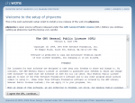
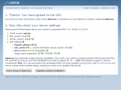
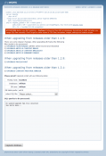
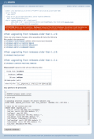
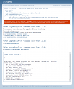
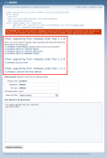
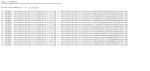

Update from RC 1.1 till 1.2.9 to 1.3.x
(Stand: Version 1.3.3)
Notice: Before updating save ALL files and make a database backup.
How to save a database?
1. Preparations
After saving all and downloading and depacking the actual version, please edit first conf.inc.php. The conf.inc.php is now located in the following folder: config/phpwcms/.
And has the name dist.conf.inc.php, after editig please rename the file to conf.inc.php.
Please edit the new conf.inc.php so that the settings fit with the settings of the old version.
Important notice: The folder names have changed since version 1.2.9.
// paths
$phpwcms['DOC_ROOT'] = $_SERVER['DOCUMENT_ROOT'];
$phpwcms['root'] = '';
$phpwcms['file_path'] = 'filearchive'; old name "phpwcms_filestorage"
$phpwcms['templates'] = 'template'; old name "phpwcms_template"
For the update please rename the folder phpwcms_filestorage to filearchive and the folder phpwcms_template to template.
Furthermore the following files have to be adjusted.
1. /config/phpwcms/conf.template_default.inc.php
2. /template/inc_css/frontend.css
Please compare now the old ( phpwcms_template ) and the new ( template ) template directory, because many new templates have been added. If you have created own templates for some content parts, you have to copy them again to the appropriate folders or adjust the new ones, because in most cases new settings were added.
These are the files that will be changed very often. If you have changed something more, please adjust this too.
2. Upload Files
Before uploading the files with an ftp program.
Please make a COMPLETE backup of all files.
Please delete all folder of phpwcms on you webspace / server except for
content
content/pages (since 1.1-RC4 22.05.2004)
filearchive (formerly phpwcms_filestorage)
template (formerly phpwcms_template)
Please also delete the content of the following folders:
content/images
content/gt (since 1.1-RC4 03.06.2004)
content/rss (since Version 1.1.5)
Why deleting ? This is only a safety measure, because some provider make difficulties when trying to overwrite files. Furthermore there are so many changes and with this action you can be sure that old files rest in the system.
Upload now the actual version. Then you should see the following folders on your webspace.

3. Set file and folder rights
Set now the file rights with an ftp program, so that all functions of phpwcms will work the right way.
| Folder | upload | 777 | ||
| Folder | filearchive | 777 | ||
| Folder | filearchive/can_be_deleted | 777 | ||
| Folder | content | 777 | ||
| Folder | content/ads | 777 | ||
| Folder | content/images | 777 | ||
| Folder | content/gt | 777 | ||
| Folder | content/form | 777 | ||
| Folder | content/rss | 777 | ||
| Folder | content/tmp | 777 | ||
| Folder | content/pages | 777 | ||
| File | template/inc_css/frontend.css | 666 | ||
| File | config/phpwcms/conf.indexpage.inc.php | 666 | ||
| File | template/inc_default/startup.php | 666 |
|  |
| Image 2 - Confirmation of the GPL |
|  |
| Image 3 - Check of the Server Settings |
|  |
| Image 4 - Choose the Database File |
|  |
| Image 5 - Confirm the Database File |
|  |
| Image 6 - Confirmation after Update |
4. Update of the Database
Call index.php to begin with the database update. You will find this file in the folder setup of your phpwcms installation. (http://www.your_domain.com/setup/index..php or http://www.your_domain.com/subfolder/setup/index.php)
First you have to agree to the license agreement (Image 2). Press "I agree the GPL, continue...".
Now the server settings will be shown and you can check whether phpwcms is running on your webspace / server (Image 3). Press "Upgrade Existing Installation" to go to the database update.
Notice: Please leave the following items unused (Image 4). If you press onto one of the following links, the update does not succeed.
When upgrading from releases older than 1.1.9:
There are some deeper changes. After upgrading db frame the following
files needs to be processed.
1) UPGRADE FILESTORAGE (all files will be moved and renamed)
2) UPGRADE ARTICLE CONTENT IMAGE
3) UPGRADE ARTICLE CONTENT IMAGELIST
4) UPGRADE ARTICLE SUMMARY IMAGE
When upgrading from releases older than 1.2.9:
5) UPGRADE PAGELAYOUT
When upgrading from releases older than 1.3.1:
6) UPGRADE CONTENT PART MULTIMEDIA
Go to
"Please proof! Upgrade script will use following data:"
Below you can see a table with all your settings for the database. Do they fit, press "select SQL file: please select".
You see now the following items:
00__phpwcms_update_older.sql
01__phpwcms_1.1-RC4_22-04-2004.sql
02__phpwcms_1.1-RC4_31-05-2004.sql
03__phpwcms_1.1-RC4_08-06-2004.sql
04__phpwcms_1.1-RC4_13-08-004.sql
05__phpwcms_1.1-RC4_25-08-004.sql
06__phpwcms_1.1-RC4_15-10-004.sql
07__1.1.5-DEV_to_1.1.9-DEV.sql
07__27-08-2004_to_1.2.7.sql
08__1.1.9-DEV_to_1.2-DEV.sql
09__1.2.1-DEV_to_1.2.2-DEV.sql
10__1.2.2-DEV_to_1.2.3-DEV.sql
11__1.2.3-DEV_to_1.2.4-DEV.sql
12__1.2.4-DEV_to_1.2.5-DEV.sql
13__1.2.5-DEV_to_1.2.6-DEV.sql
14__1.2.6-DEV_to_1.2.7-DEV.sql
15__1.2.7-DEV_to_1.2.9.sql
16__1.2.9-DEV_to_1.3.0.sql
17__1.3.0_to_1.3.2.sql
18__1.3.2_to_1.3.3.sql
These are the database updates. Choose out of this list the first date after the relase you have installed.
When you installation is before the version of 22.04.2004 then take the update 00__phpwcms_update_older.sql first. After choosing an update file, the text area below shows what changes this update will bring (Image 5) . Confirm the execution of this update by pressing "Updgrade Database"
When the update has been executed (Image 6), you will see again in the text area what have been done. Errors will be shown in red text.
Repeat these steps by pressing "Choose another SQL file..." until you come to the last update file, but please leave the file "07__1.1.5-DEV_to_1.1.9-DEV.sql" unused and take as the next file "07__27-08-2004_to_1.2.7.sql", because this file is only for users of version 1.1.5.
|  |
| Image 7 - Additional Database Updates |
|  |
| Image 8 - UPGRADE FILESTORAGE |
5. Execute Additional Updates
Now execute the updates that you had to leave unused. (Image 7)
1) UPGRADE FILESTORAGE
Because with version 1.2.x the subfolders 1-10 in the directory phpwcms_filestorage are needless, all files of these folders have to be moved. Press "UPGRADE FILESTORAGE" to start this operation.
A new window will be opened (Image 8) and you will see the following content. When you are not sure whether all files have been moved, press "click here". Then you can close this window and delete the subfolders 1-xx in the folder "filearchive".
Repeat this for:
2) UPGRADE ARTICLE CONTENT IMAGE
3) UPGRADE ARTICLE CONTENT IMAGELIST
4) UPGRADE ARTICLE SUMMARY IMAGE
5) UPGRADE PAGELAYOUT
6) UPGRADE CONTENT PART MULTIMEDIA
With every database update a new window will be opened, in which either a confirmation will be shown what has been done or that no actualisation was necessary or the line "if last number is < xx click here" will be shown (Image 8). That means that the upgrade script is executing blocks for a group. When there is shown "if last number is < 19 click here" (as seen at image 8) and you see that the last change would be for example line 18, you have to press again "click here" to execute the last changes once more, until no lines are there anymore or the last line contains the number as shown in "if last number is < xx click here". To be sure press "click here" again. Then you will get an empty page only with the text "if last number is < xx click here".
When you have exceuted all updates, please delete the folder "setup" and the folders 1-10 in filearchive on your server / webspace.
You should now be able to login as always done.
Last Changes: Tuesday, 30. October 2007